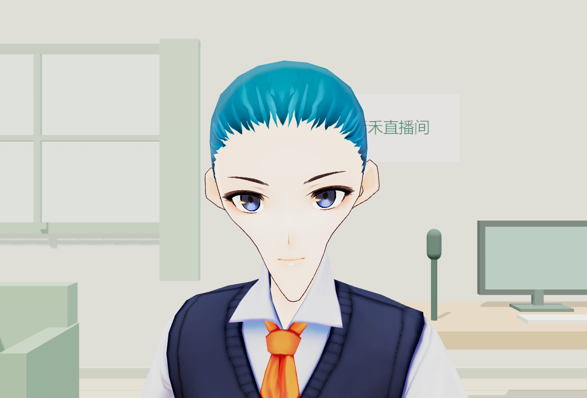
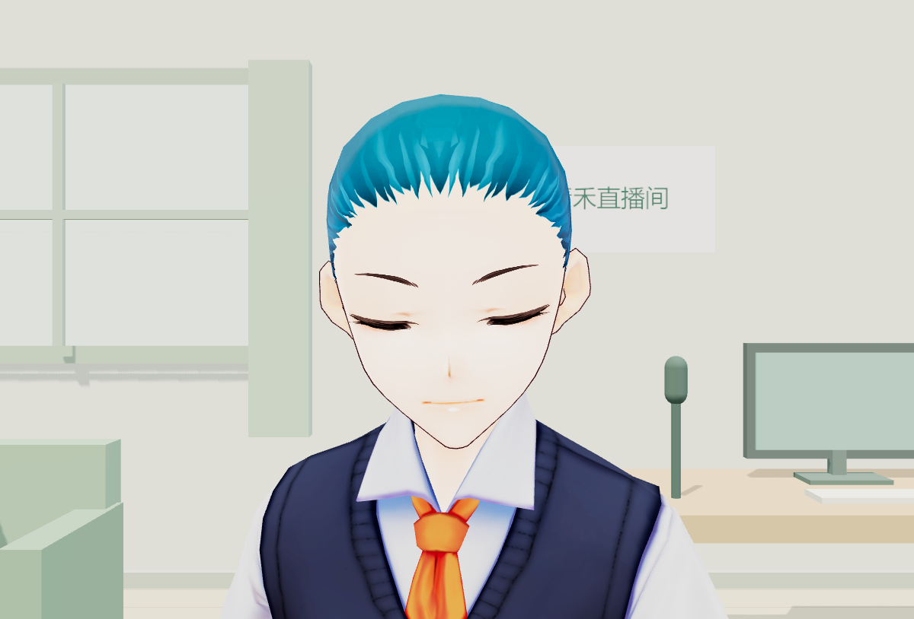
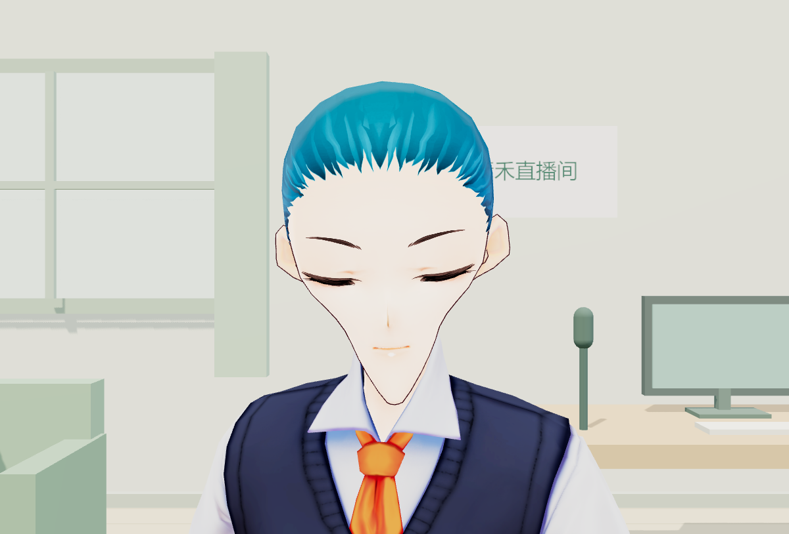
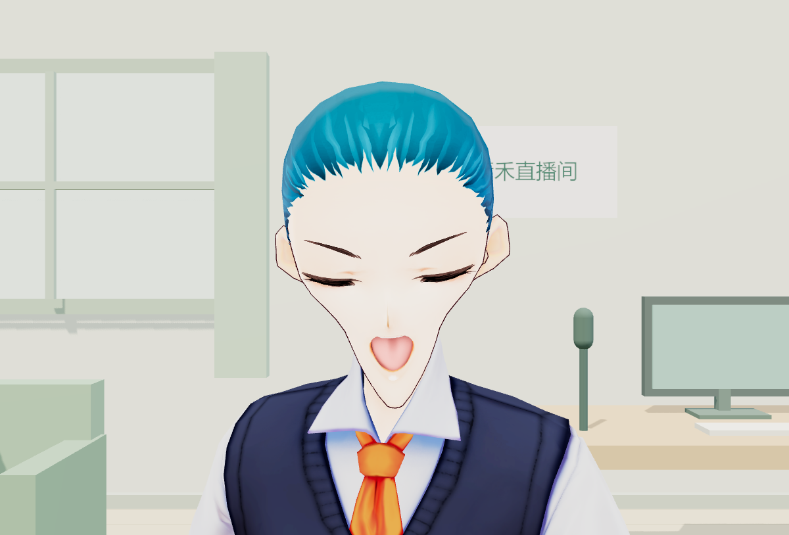

固定构建 14f73cbe1e26 · 源码 726fae4b24bb
本页检查真实头部几何变化、表情与衣领适配。新候选不包含原请求的身体变化，不代表八预设或 M2 完成。下巴偏尖，混合口型存在已知口内接触，均未标为视觉通过。
加载完成后直接录制游戏画面。没有暂停诊断或速度调整。两段采用同镜头与指令顺序；浏览器操作耗时可能不同，并非逐帧同步。
以下是暂停态诊断，用于查看具体边界，不能代替整段动作验收。




设备：Ryzen 9 9950X3D／RTX 4090 开发机。普通电脑未实测。数字、连续采样、正常速度影片与人工观感分别记录；微小口内相交计数不等于可见穿透深度。